How we went from one of our gamma-structure results - helped by Chowla-Dwork-Evans - to the start our new ...
Two propositions (greatly pared down for much more general statements, and only what is needed here, and keep in mind that we were trying (successfully) to understand the gamma-structure ... ).Let be any odd prime (3, 5, 7, 11, 13, 17, 19, ... ); then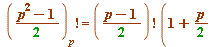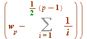 (mod  )
)
which transforms (recall an earlier section) to 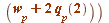 (mod 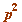) ... (i)
Let 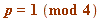 be prime (5, 13, 17, 29, 37, ... ; there are infinitely many of them); then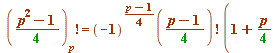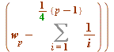 (mod )
which transforms (again recall an earlier section) to
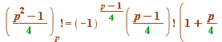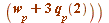 (mod  ) ... (ii)where - for a given odd prime
) ... (ii)where - for a given odd prime  - the 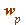 and 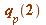 are classic number theoretic objects (the 'Wilson quotient' and the 'base 2 Fermat quotient') introduced in an earlier section.Squaring at (ii), and dividing into (i) gives (take note of how that 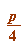 has transformed into 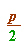):
- the 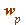 and 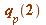 are classic number theoretic objects (the 'Wilson quotient' and the 'base 2 Fermat quotient') introduced in an earlier section.Squaring at (ii), and dividing into (i) gives (take note of how that 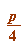 has transformed into 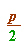):
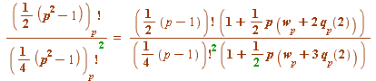 (mod  ) ... (iii)
) ... (iii)
Then, using the Chowla-Dwork-Evans theorem, (iii) transforms into: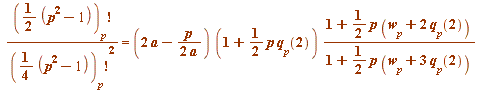 (mod 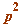) ... (iv)Observing that
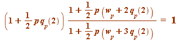 (mod )
(I leave it as a simple congruence exercise to you to show why)
then (iv) simplifies to this completely new observation (of ours):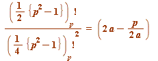 (mod  ) ... (v)That (v) radically deviated from the Chowla-Dwork-Evans theorem in that the object on the left-hand side didn't involve regular factorials, but rather Gauss factorials, which we had introduced in our very first paper (before we began our gamma-structure studies)._________________
) ... (v)That (v) radically deviated from the Chowla-Dwork-Evans theorem in that the object on the left-hand side didn't involve regular factorials, but rather Gauss factorials, which we had introduced in our very first paper (before we began our gamma-structure studies)._________________
In the next section I look at how we bagan to extend the above (v), but in so doing I don't take up that we also obtained a (mod  ) extension of Chowla-Dwork-Evans. Instead I simply refer you to the original paper:
) extension of Chowla-Dwork-Evans. Instead I simply refer you to the original paper:
Mod p^3 analogues of theorems of Gauss and Jacobi on
binomial coefficients, Acta Arithmetica, Vol. 142, No. 2, 103-118, 2010
_________________